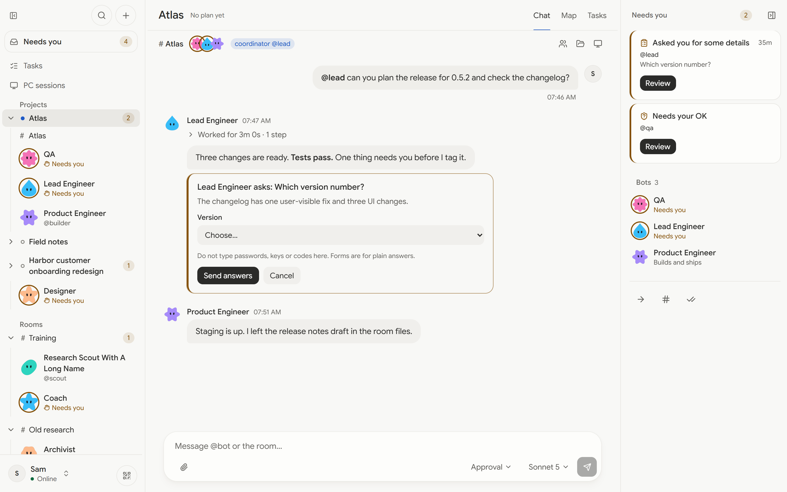

A cozy home for your team of AI helpers
Chat with them one on one or as a group. They remember what matters, pick up new skills, and check with you before anything risky.
Free and open source. Works with your Claude subscription.


Like a group chat, except everyone in it works for you
Talk to them like teammates
Message one helper directly, or bring a few into a room and @mention whoever should pick it up. They hand work to each other and keep you in the loop.
They remember, and keep getting better
Each helper has its own name, memory and way of working. Teach them skills, and set routines so they check in on their own, every morning or every Monday.
Nothing risky without your okay
Before a helper runs a command, edits a file outside its workspace or changes your setup, it asks. One tap to allow, one to say not now.
It lives on your computer
- No second bill
- Your helpers run on the Claude subscription you already have, or an API key if you prefer.
- Your conversations stay yours
- Chats, files and keys stay on your machine. No tracking.
- No account needed
- Download it and start chatting. Signing in is optional.
Up and running in a few minutes
Toki walks you through setup the first time you open it.
-
Download Toki
Get the Windows installer above. On Mac or Linux, run it from source.
-
Connect Claude
Sign in to Claude Code once. Toki checks it's ready and lets you know.
-
Say hi to your first helper
Pick a starter helper or make your own, then start chatting.